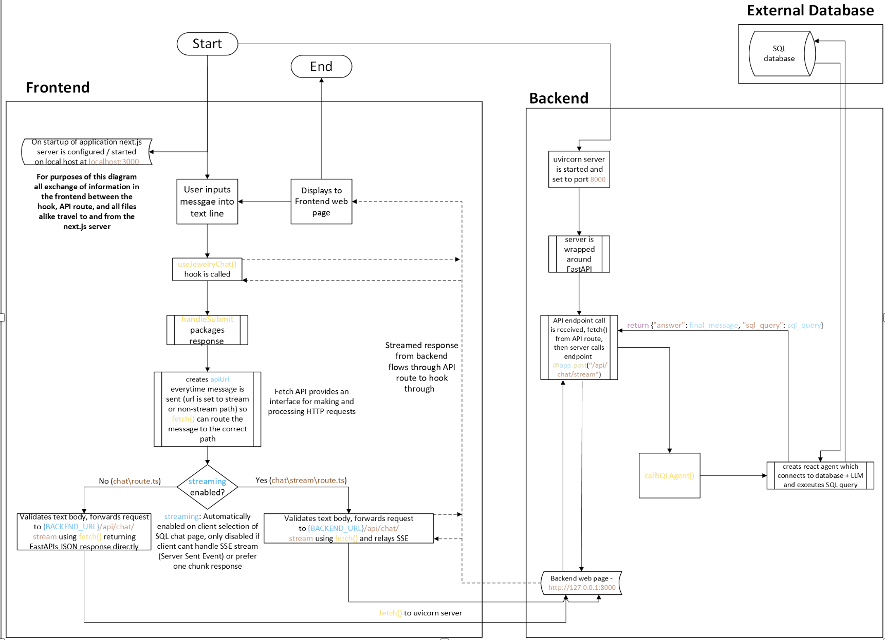
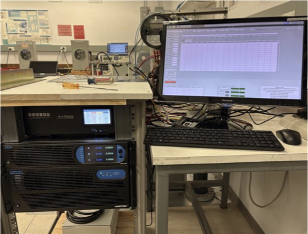
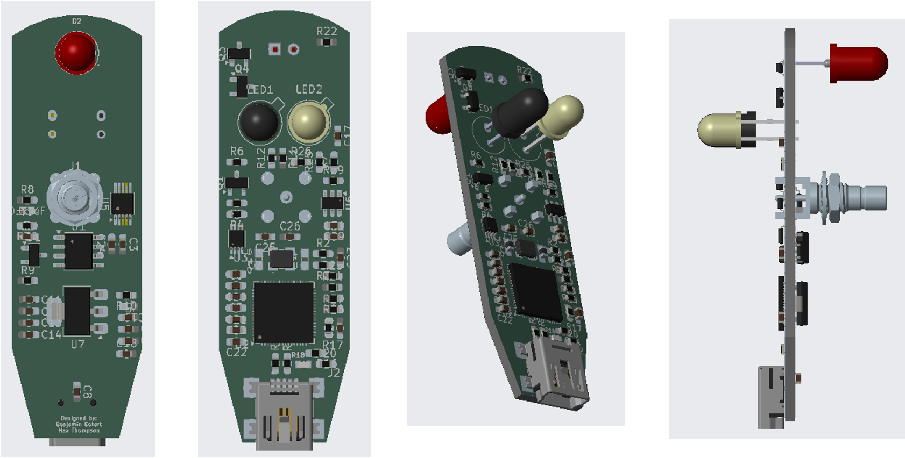
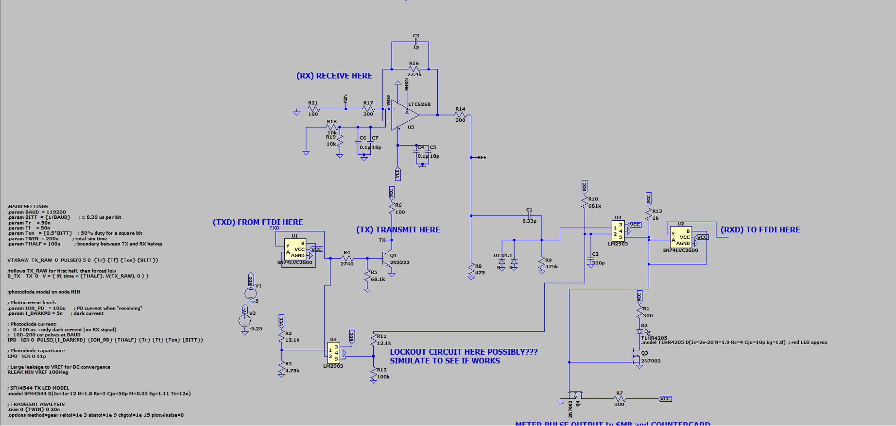
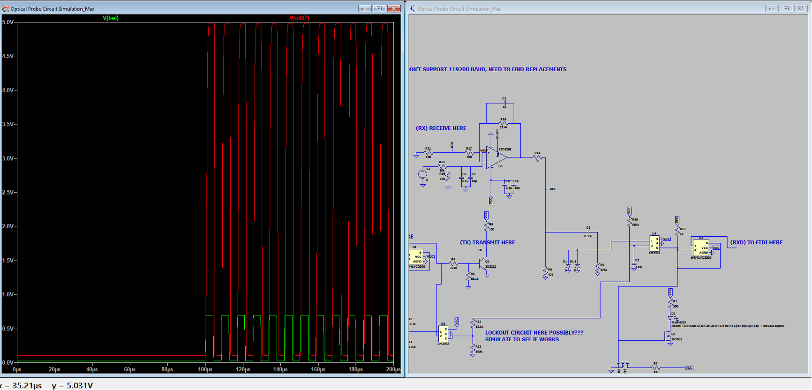
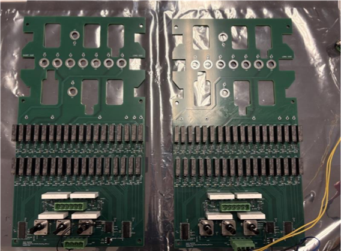
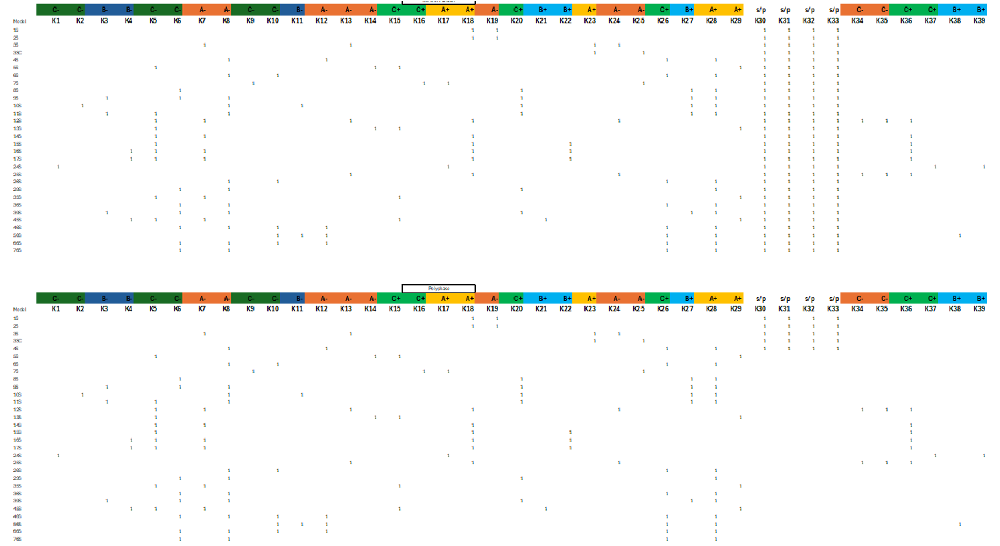

Landis+Gyr
During my co-op rotation in the GE Lab, I worked across software, electrical test systems, instrumentation, PCB design, and automation for meter-testing equipment.
Database Query Agent
I developed a web application that accepts natural-language questions within the context of a connected SQL database and returns the corresponding database results. The application uses a LangChain SQL agent to translate user questions into SQL queries and present the results.

Application architecture showing the frontend request flow, FastAPI backend, LangChain SQL agent, and SQL database.
Application demo showing a natural-language request being sent through the database query agent.
Verification demo showing the SQL code being executed and the resulting database output.
Mini-Blue
Mini-Blue is a miniature version of the Big Blue meter-testing system. I worked on the user interface and manual-control workflow, including starting the interface, enabling the voltage and current sources, and using the JOG function to send current and voltage through the meter. I then verified at the source that the current and voltage outputs were active.

Mini-Blue testing fixture used for meter testing and source control.
Mini-Blue demonstration showing the interface, source controls, JOG operation, and verification of the voltage and current outputs.
Optical Probe Redesign
I worked on the optical probe redesign, including PCB layout and mechanical fit between the board and the probe head shell. I also added the design to the LTspice simulation and evaluated the received optical signal before and after amplification.

PCB and mechanical layout work for the optical probe redesign.

LTspice simulation of the optical probe receive and amplification circuitry.

Receive-signal waveform showing the optical probe signal before and after amplification.
Universal Socket Routing Board
I worked with Fred to solder the universal socket routing boards and then wrote the control code. The software first selects the meter form — the type of meter being powered — and then selects whether the meter should be powered in series, parallel, or polyphase. Based on those selections, the controller sets the appropriate relays to route power to the corresponding holes on the top of the board.

Universal socket routing boards used to route power to different meter configurations.
Routing-board demonstration: selecting the meter form and power configuration, then using the relay logic to route power to the appropriate socket positions.

Truth table defining the meter-form and routing selections used by the universal socket routing control logic.
Meter Testing Interface
I developed a Python UI that interfaces with an electrical meter testing fixture. The UI communicates with an Arduino, which translates commands into SCPI commands sent to the voltage and current sources used to test the meters. The original interface was written in C and I was tasked with translating it into Python.
Current Transformer Board
I also worked on the design of a current-transformer board and wrote the control software for its ballast resistors. The board provides variable control of output current when attached to three CTs, supporting currents up to 600 amps.